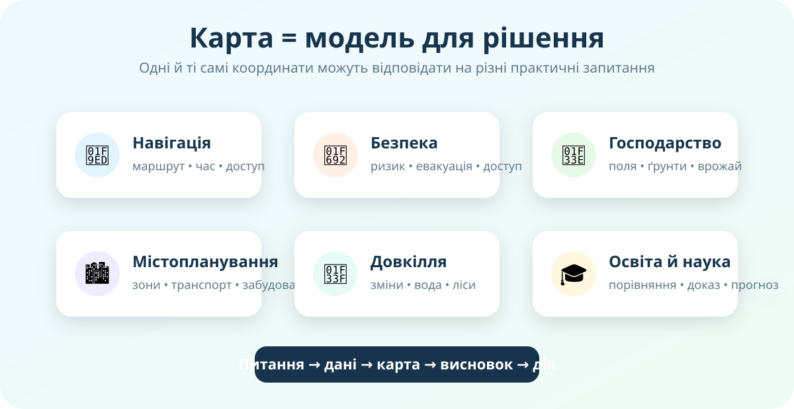

Навігація
Для поїздки потрібні дороги, повороти, типи шляхів, адреси, обмеження руху й актуальність мережі. Те, що достатньо для туриста, може бути недостатнім для пожежної машини.
Карта потрібна не лише для уроку. Нею прокладають маршрути, планують міста, стежать за полями й лісами, оцінюють ризики та організовують допомогу. Сьогодні Ви працюєте як команда, яка має обрати правильні геодані для реального рішення.
Вам треба вирішити, де безпечніше прокласти маршрут евакуації після підтоплення. Яку інформацію Ви шукатимете першою?

Локальна схема уроку: питання → геодані → карта → висновок → дія.
Для поїздки потрібні дороги, повороти, типи шляхів, адреси, обмеження руху й актуальність мережі. Те, що достатньо для туриста, може бути недостатнім для пожежної машини.
Потрібно поєднати кілька шарів: небезпечну зону, населені пункти, дороги, мости, водойми, укриття або пункти допомоги.
Супутникові знімки допомагають бачити стан рослинності, вологість, неоднорідність поля та зміни в часі.
Планувальник аналізує транспорт, забудову, зелені зони, населення, ризики й доступність послуг. Один шар рідко дає достатню відповідь.
Оцініть твердження.
OpenStreetMap — відкрита карта світу, створювана спільнотою. Вона містить дороги, будівлі, адреси, об’єкти інфраструктури та інші просторові дані.

NASA Earth Observatory: глобальна фізична основа Землі. Такі дані допомагають бачити великі просторові закономірності.
У Browser можна візуалізувати, порівнювати й аналізувати супутникові дані. Офіційна документація прямо наводить сфери застосування: моніторинг довкілля, управління катастрофами, міське планування та сільське господарство.
Оберіть одну проблему: безпечний шлях до школи; туристичний маршрут; доступ до води; зелені зони; розміщення магазину; зміни рослинності; транспортна доступність; ризик підтоплення. Ваш результат — постер, презентація або цифрова карта з посиланнями та висновком.
Готово 0 із 6 кроків
Esri, «What is GIS?». Для уроку достатньо перших ~90 секунд: зверніть увагу на сфери, у яких просторові дані допомагають приймати рішення.
ГІС — це система для роботи з даними, які мають просторову прив’язку. Вона дає змогу поєднувати шари, аналізувати взаємне розташування об’єктів, шукати закономірності й будувати карти для конкретної задачі.
Отже, сучасна карта часто є не завершеною «картинкою», а інтерфейсом до даних.
Проблема: чи може карта сама по собі бути достатньою підставою для важливого рішення?
§13. Завершіть мініпроєкт «Карти у житті та господарській діяльності людини».
Обов’язково: проблема, мінімум 2 картографічні джерела, 2–3 докази з карти, висновок і активні посилання.
Спочатку введіть дані учня/учениці.